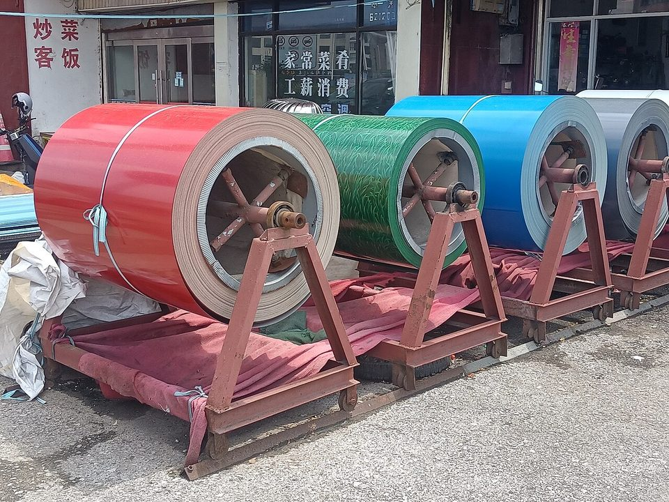
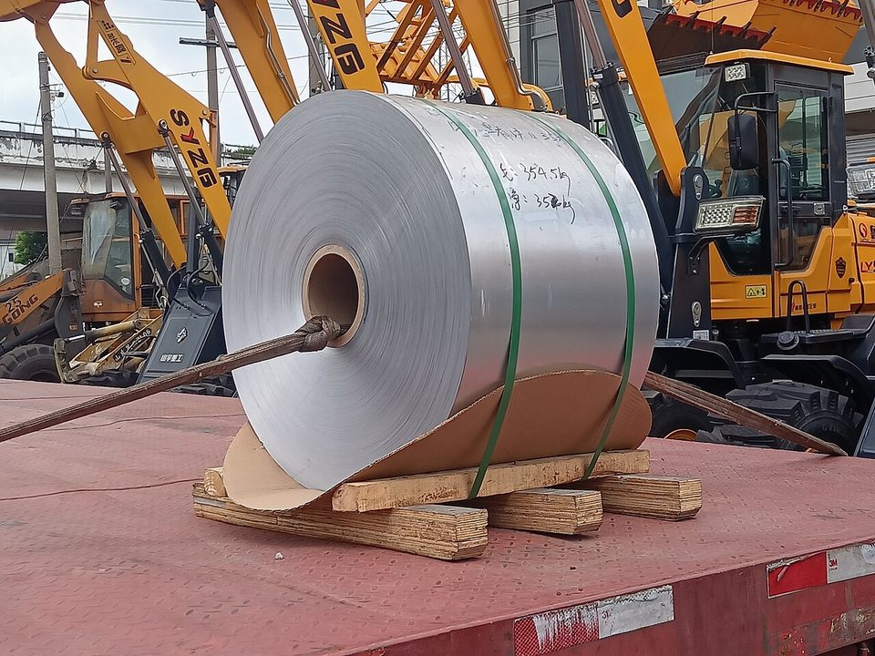

CHINA STEEL · FINANCIAL REPORT · 2024
中鋼 2024 財報分析：本業獲利腰斬，業外與非鋼事業撐住全年
鋼鐵潮流工作室 · 發布 2026.10.06
本期重點
2024 年（民國 113 年）全球鋼市仍在低檔盤整，中國鋼材出口逾 1.1 億噸、創九年新高，壓抑亞洲鋼價。中鋼合併營收 3,605 億元，與 2023 年大致持平；但毛利率從 4.6% 降到 4.2%，營業利益只剩 17.9 億元，比前一年少一半。全年稅後淨利反而小增，歸屬母公司業主淨利 19.8 億元、每股盈餘 0.13 元，靠的是營業外收支與非鋼鐵事業。
- 本業：鋼鐵部門營業虧損擴大到 76.5 億元；非鋼鐵部門（工程、工業材料、綠能、海運、貿易、投資等）賺進 100.9 億元，是集團本業獲利的唯一來源。
- 業外：營業外收支淨額 27.9 億元，是 2023 年的近 3 倍，股利、利息收入與匯兌利益增加，抵銷了上升的財務成本。
- 存貨：年底存貨 1,076.8 億元，比前一年減少 10.5%；全年認列存貨跌價損失 15.9 億元，2023 年則是回升利益 47.2 億元。
- 資金：資本支出 427.7 億元，略高於營業現金流 422.9 億元；短期票券大幅改為長期借款與長期票券，流動比率由 118% 升至 131%。
- 股利：普通股現金股利每股 0.33 元（2025 年 6 月股東常會通過），高於當年每股盈餘。
財報基本資料
| 報告期間 | 2024 年 1 月 1 日至 12 月 31 日（民國 113 年度），與 2023 年度比較 |
|---|---|
| 報表範圍 | 合併財務報告：中國鋼鐵股份有限公司及子公司。鋼鐵部門含中鋼、中龍、中鴻、中馬（馬來西亞）、中鋼住金越南（CSVC）與中鋼印度（CSCI）；非鋼鐵部門含中聯資源、中鋼鋁業、中鋼碳素、中能發電等 |
| 董事會通過 | 2025 年 2 月 27 日 |
| 簽證會計師 | 勤業眾信聯合會計師事務所 許瑞軒、柯志賢；查核意見為合併財務報表在所有重大方面允當表達 |
| 關鍵查核事項 | 鋼鐵部門商品銷貨收入認列（鋼鐵部門商品銷貨收入占營業收入七成以上） |
| 原文下載 | 中鋼 113 年度合併財務報告（PDF） |
關鍵數字
一、損益：營收持平，本業獲利腰斬
2024 年合併營收 3,605.4 億元，只比 2023 年少 0.8%；營業成本 3,454.7 億元，同樣只少 0.3%。兩者幾乎同步，使毛利從 167.7 億元降到 150.6 億元，毛利率 4.2%。營業費用 132.7 億元與前一年相當，其中研發費用增加到 22.7 億元，扣除後營業利益只剩 17.9 億元，營業利益率 0.5%。
從營業利益到淨利，營業外收支淨額 27.9 億元，比本業還多；稅前淨利 45.8 億元與 2023 年幾乎相同。所得稅從 10.6 億元降到 7.0 億元，本期淨利 38.8 億元，反而比前一年多 9.8%。不過其中將近一半（19.0 億元）屬於子公司的其他股東，歸屬中鋼股東的淨利為 19.8 億元，每股盈餘 0.13 元。
值得留意的是存貨評價。鋼鐵業存貨以成本與淨變現價值孰低衡量，鋼價下跌時要提列跌價損失、回升時再迴轉，計入營業成本。2024 年中鋼認列存貨跌價損失 15.9 億元，2023 年則是回升利益 47.2 億元，一來一回相差 63.1 億元。若排除這個因素，2024 年毛利約 166.5 億元，反而高於 2023 年的約 120.5 億元（本站計算）。另外，2024 年迴轉虧損性合約負債準備 29.3 億元，同樣是非現金的估計變動。閱讀鋼鐵公司財報，評價損益常會放大或掩蓋本業的真實變化。
二、部門：鋼鐵虧損擴大，非鋼事業賺錢
中鋼的應報導部門分為「鋼鐵部門」與「非鋼鐵部門」。鋼鐵部門包括中鋼、中龍、中鴻、中馬、中鋼住金越南與中鋼印度。2024 年鋼鐵部門對外營收 2,796.8 億元，占合併營收 77.6%，部門營業虧損從 66.2 億元擴大到 76.5 億元；非鋼鐵部門對外營收 808.5 億元，部門利益 100.9 億元。
鋼鐵部門的稅後虧損從 40.0 億元擴大到 77.4 億元，除了本業多虧 10.3 億元，更大的落差來自權益法投資：鋼鐵部門認列的關聯企業損益從 2023 年的利益 22.1 億元，轉為 2024 年的損失 9.6 億元。非鋼鐵部門則在權益法投資收益 39.9 億元、其他營業外收支 35.2 億元的挹注下，稅後淨利增加到 150.5 億元。

三、地區：越南成長，中國縮減
依營運地點區分，台灣營收 3,189.9 億元，占合併營收 88.5%。海外營運據點中，越南（中鋼住金越南等）營收 218.8 億元，成長 31.0%，是海外主要據點中成長最快的；中國營收從 69.1 億元降到 43.7 億元，減少 36.8%；馬來西亞與印度大致持平。
四、業外：股利與利息撐起獲利
中鋼長期持有大量金融資產與轉投資。2024 年營業外收支淨額 27.9 億元：利息收入 12.5 億元、其他收入 40.3 億元（其中股利收入 24.3 億元）、其他利益及損失 8.1 億元（主要為淨匯兌利益 11.1 億元）、權益法投資利益 7.3 億元，扣除財務成本 40.5 億元。財務成本比前一年多 4.2 億元；若加上依規定資本化、計入資產成本的利息 12.1 億元，全年利息費用總額達 52.6 億元。
五、資產負債：去化存貨，短債轉長債
2024 年底資產總計 6,950.6 億元，比前一年底增加 2.4%。存貨減少 126.7 億元，不動產、廠房及設備增加 220.2 億元，反映全年 427.7 億元的資本支出。負債總計 3,535.7 億元，負債比率 50.9%；權益總計 3,414.9 億元，其中歸屬母公司業主 3,013.0 億元，略減 1.5%。
負債結構的變化最明顯：應付短期票券從 629.5 億元降到 256.1 億元，銀行長期借款從 521.7 億元增加到 714.2 億元，長期應付票券從 247.0 億元增加到 492.3 億元。短期資金改由長期資金支應後，流動負債從 1,677.2 億元降到 1,469.4 億元，流動比率由 118% 升至 131%，資金調度的壓力下降，但借款總額仍增加約 111 億元。
六、現金流：營業現金流不夠支應資本支出
2024 年營業活動淨現金流入 422.9 億元，比前一年增加 36.0 億元，其中存貨減少釋出 109.8 億元現金；折舊費用 321.5 億元，遠高於淨利，是營業現金流的主要來源。投資活動淨流出 406.2 億元，其中購置不動產、廠房及設備 427.7 億元，比營業現金流還多 4.8 億元（本站計算）。籌資活動則淨流入 15.8 億元：發放現金股利 55.1 億元，比前一年的 157.6 億元大幅減少，支付利息 52.3 億元。

七、股東報酬
2024 年歸屬母公司業主淨利 19.8 億元，以平均業主權益計算的股東權益報酬率約 0.65%（本站計算）。2024 年度盈餘分配為普通股現金股利每股 0.33 元、特別股每股 1.40 元，並提列特別盈餘公積 24.3 億元，已於 2025 年 6 月 19 日股東常會通過；普通股股利約 51.4 億元，高於當年歸屬母公司淨利。
分析觀點
- 2024 年是「營收持平、本業變薄」的一年。毛利率 4.2%、營業利益率 0.5%，對資本密集、每年折舊超過 300 億元的一貫作業鋼廠而言，幾乎沒有獲利緩衝。
- 鋼鐵部門連續兩年營業虧損，集團獲利靠非鋼鐵事業與業外收益支撐；合併淨利有一半歸屬子公司的其他股東，母公司股東能分到的有限。
- 存貨跌價與虧損性合約的估計變動，兩年間對損益的影響動輒數十億元，看財報時宜同時比較排除存貨評價影響後的毛利。
- 資本支出仍高於營業現金流，股利也高於每股盈餘，借款持續增加；短債轉長債改善了流動性，但財務成本已升到 40.5 億元，與營業利益相比偏高。
- 越南據點營收成長三成，海外布局開始貢獻；中國據點營收減少近四成，與當地鋼市疲弱的方向一致。
延伸閱讀
資料來源
- 中國鋼鐵股份有限公司及子公司 113 年度及 112 年度合併財務報告暨會計師查核報告（中鋼，2025-02）
- GACC: China's 2024 steel exports touch 9-year high（Mysteel，2025-01）
- 中鋼配發現金股利 0.3 元 黃建智續任董事長（風傳媒，2025-06-19）
- 中鋼投資人關係：財務報告（中鋼）
本文為財務報告重點整理與觀點，數字以中鋼原文為準，金額由千元換算為億元並四捨五入；標示「本站計算」者為依原文數字換算。內容僅供產業資訊參考，不構成投資建議。